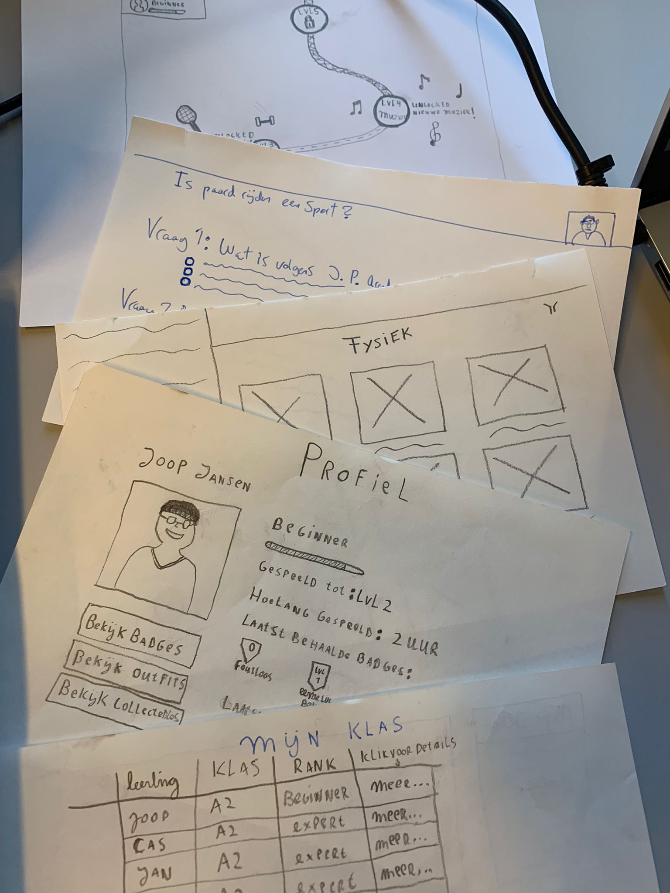

Introductie
Dit project werd uitgevoerd in samenwerking met CED-Groep en richtte zich op de digitale leeromgeving Nieuwsbegrip. Samen met een team van zes CMD-studenten van de Hogeschool Arnhem en Nijmegen werkten we gedurende vijf maanden aan dit traject.
Context & Uitdaging
Veel leerkrachten gaven aan dat leerlingen de focus verliezen tijdens het werken met Nieuwsbegrip. Het navigeren door de website kost veel tijd, waardoor de voorbereiding en lesplanning minder soepel verlopen. Dit probleem heeft ook directe invloed op het leerproces van de leerlingen. (… extra context …)
Doelgroep
De doelgroep bestaat uit leerkrachten, PABO-studenten en klassenondersteuners in het basisonderwijs. Omdat docenten vaak een hoge werkdruk ervaren, zijn onderzoeksmethoden gebruikt die weinig tijd kosten maar toch waardevolle inzichten opleveren, zoals (….)
Doelstelling
Het doel van dit project is het verbeteren van de gebruiksvriendelijkheid en toegankelijkheid van Nieuwsbegrip.nl. De nadruk ligt op eenvoudiger navigeren en betere ondersteuning van docenten. Het eindresultaat is een high-fidelity prototype in Adobe XD.
Ontwerpvraag
Hoe kan ervoor gezorgd worden dat leerkrachten en klassenondersteuners sneller en overzichtelijker kunnen navigeren binnen de online omgeving van Nieuwsbegrip?
Rol UX / UI Designer
Duur 5 maanden
Team 6 studenten
Tools Figma, Adobe XD, Miro Board
Design Thinking
Voor dit project is de Design Thinking methode toegepast, omdat deze een gestructureerde maar flexibele aanpak biedt om complexe problemen aan te pakken. Het proces bestaat uit vijf fases – Empathize, Define, Ideate, Prototype en Test – waarin steeds de gebruiker centraal staat. Deze methode is gekozen omdat het ruimte geeft om ideeën snel te verkennen, te toetsen en te verbeteren. Door iteratief te werken konden inzichten uit onderzoek direct vertaald worden naar ontwerpen en prototypes, die vervolgens opnieuw werden getest en aangepast. Dit zorgde ervoor dat de oplossing beter aansloot bij de behoeften van de leerkrachten en in de praktijk echt bruikbaar werd.

Empathize

Define

Ideate

Prototype

Test
Onderzoek & Inzichten
Empathy & Define
Er is onderzocht hoe leerkrachten en PABO-studenten de digitale omgeving van Nieuwsbegrip ervaren. Tijdens de contextual inquiries bleek dat veel tijd verloren ging aan het zoeken naar lesmaterialen, het gebruik van niet-interactieve pdf’s en verwarrende navigatie. Leerkrachten gaven aan dat dit leidde tot frustratie, verlies van overzicht en extra werkdruk. Ze benadrukten de behoefte aan een centrale plek voor lesmateriaal, eenvoudige navigatie en meer interactieve ondersteuning. Deze inzichten vormen de basis voor een herontwerp dat het platform toegankelijker en efficiënter maakt.

Requirements
Tijdens de Define-fase zijn de belangrijkste inzichten uit het onderzoek samengevat in een requirementslijst. Leerkrachten en PABO-studenten gaven aan dat ze moeite hadden met navigatie, verspreide materialen en onduidelijke termen. Daarom staan eenvoud, overzicht en extra ondersteuning centraal. Deze lijst gaf richting aan de ideationfase en vormde de basis voor de conceptontwikkeling.
- Navigatie verbeteren
- Hulpfunctie bij opdrachten
- Eenvoudiger taalniveau en duidelijke termen
- Lesmaterialen overzichtelijk op één plek
- Extra ondersteuning bij taalachterstand/visuele beperkingen
Conceptontwikkeling
Ideate
In de ideationfase zijn creatieve methoden ingezet zoals mindmapping, Crazy 8, Thirty Five en de $100-methode om een breed scala aan ideeën te bedenken en te verfijnen. Deze aanpak leidde tot verschillende oplossingsrichtingen die inspelen op personalisatie, samenwerking en efficiëntie in het gebruik van het platform.

Prototype
Tijdens het proces zijn meerdere versies van het prototype ontwikkeld, telkens verbeterd op basis van feedback. Het eindprototype biedt een duidelijke navigatie en overzichtelijke structuur, waardoor de gebruikservaring voor leerkrachten sterk is verbeterd.
Validatie & Resultaten
Test & Validatie
Het ontwerp is stap voor stap verfijnd door regelmatig te testen en evalueren. Leerkrachten, peers en experts gaven feedback die hielp om de navigatie te verduidelijken en de gebruiksvriendelijkheid te vergroten.
Resultaten
Uit de tests en evaluaties kwam naar voren dat het vernieuwde ontwerp de gebruikservaring sterk heeft verbeterd. Leerkrachten gaven aan dat de omgeving overzichtelijker en eenvoudiger werd, waardoor lessen sneller voorbereid konden worden. Ook werd de samenwerking gemakkelijker gemaakt door nieuwe functies.
- ✔ Meer overzicht: docenten vonden sneller hun weg.
- ✔ Samenwerking: lessen konden eenvoudig gedeeld worden.
- ✔ Herbruikbaarheid: opslaan en hergebruiken van lessen mogelijk.
- ✔ Verbeterpunten: labels en visuele feedback moesten beter.